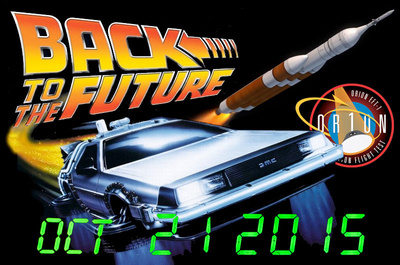
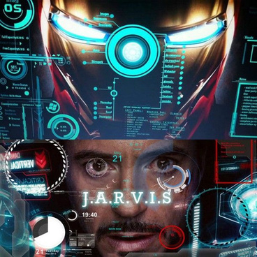
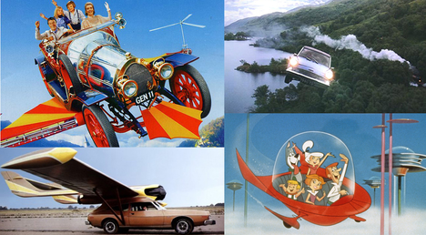

Humanity has attempted to explain many events beyond its understanding through curiosity and imagination. All innovations and the power they create are derived from the pursuit of a dream. Even before the establishment of modern concepts of artificial intelligence and technology became reality, they had already taken root in humanity's imagination through books and films. The central question is: In the age focused on AI and technology, can we say that humanity's long-cherished dream of creating superior intelligence technology has finally become a reality, or have people's expectations been inflated?
The massive gap between popular culture's expectations about AI and technology and the reality it presents today actually offers a critical window to understanding the cultural anatomy of the current AI bubble. Imagine a world where flying cars zip through the skies, conscious robots and human-like AI seamlessly blend into our lives. While we dream about these incredible advancements, the reality is that we have yet to achieve them. This cycle of inflated expectations followed by disappointment is known as "AI winters," and it's not new. AI has weathered it before.
Fiction can help us imagine things differently, to see our world and our present in a different light, but it cannot predict or dictate what technology will actually become.
Instead of high expectations, some systems can predict but not think, generate visuals but not understand without seeing, and speak but not understand without listening. This gap persists due to a variety of factors, both cultural and technological, which are related to each other. Naturally, the media often romanticizes the capabilities of AI, creating an allure that blurs the line between fiction and achievable reality. Technologically, the complexity of replicating the human brain and emotional intelligence in machines remains a powerful challenge, requiring breakthroughs in areas like data processing, machine learning, and neural network development. Therefore, humanity's long-standing desire to create an independent-thinking being seems to be coming true through artificial intelligence, but it's still a bit of a fairy tale. Flying cars, conscious robots, and human-like AI have yet to become a reality.
The Flying Car Dream
The flying car is a great example of how science fiction can sometimes have unrealistic expectations when it comes to technology. The way it looks in the movies is often more important than whether it would actually work in real life. This can create numerous cultural expectations that are difficult to fulfill. When Back to the Future Part II sent Marty McFly forward to October 21, 2015, director Robert Zemeckis filled the screen with flying cars and hovering skateboards. Yet when that specific date arrived in our timeline, the skies remained empty of traffic, revealing that humankind's most beloved dream of tomorrow was, ultimately, just a miscalculation of how constrained not by imagination, but by the physical and economic limitations of reality.
The Dream of Superior Intelligence
The dream of creating a non-human superior intelligence being, which has been the theme of many movies and books throughout history, leaves artificial intelligence technologies in the reality of 2025. These technologies, which have developed rapidly in the last five years, have become a large part of our daily lives with applications such as ChatGPT and Gemini. However, these magical super-intelligence beings are far from the systems we see in reality.
Perhaps no comparison better highlights the gap between fiction and reality than the difference between Tony Stark's JARVIS (Just A Rather Very Intelligent System) from Iron Man (2008) and today's ChatGPT. These fiction-shaped expectations produce concrete real-world consequences: economic reluctance toward AI investment and psychological fear surrounding technological advancement.


The performance gap between these two systems exceeds the capabilities of today's technology. While modern GPT models boast impressive abilities, they operate on fundamentally different principles. ChatGPT cannot truly understand context; it predicts the most statistically likely next token based on patterns in training data. It has "limited features" and "works on code," making it far less intuitive than fiction suggested.
Most critically, it "does not always fully understand the context" and "can provide answers that are irrelevant or inappropriate to the situation." While JARVIS in fiction represents artificial intelligence with consciousness and comprehension, GPT represents narrow AI, sophisticated pattern matching without genuine understanding.
Fiction's Influence on Our Perception of AI
In this context, the influence of fiction becomes particularly evident, as popular films and literature have reflected a shift in thinking about AI, leading audiences to perceive it as something more than merely human-like. This anthropocentric perspective serves more than just a narrative purpose; it fundamentally shapes how viewers perceive real-world AI, encouraging the belief that machines can embody distinctly human features, such as consciousness, empathy, or even personal identity. Thus, the persistent depiction of AI as human in fiction not only blurs the line between machine and person in the public imagination but also prompts society to reconsider and renegotiate the boundaries of humanity itself.

In many stories, it's important to understand the reactions of audiences to different AI portrayals. For example, movies like Star Wars include characters like R2-D2 and C-3PO, as well as droids fighting for villains. Similarly, Black Mirror features episodes that portray technology in both positive and negative ways. When examining these dark, futuristic themes in fiction, robots and artificial intelligence emerge as dominant narrative elements, often with themes of "machine rebellion."
Under this theme of revolution with superior intelligence technologies, we see fear created by both psychological and economic systems. The ongoing attention on catastrophic AI scenarios has led to what researchers refer to as entertainment-driven belief systems. Studies have found that individuals who perceive AI as being accurately portrayed in entertainment media are more likely to visualize apocalyptic robots. This phenomenon contributes to genuine economic concerns and psychological fear regarding technological advancements.
AI Hallucinations and the Trust Crisis
While millions of investments and innovations continue, when we look back at society, one of the reasons for these AI winters is the idea that AI tools, far from the intelligence of JARVIS, are spreading and producing false or fabricated information, referred to as "hallucinations." This is not just an error; it leads to direct trust risks for leaders and employees and financial and emotional losses in business processes. According to a recent survey by Prosper Insights & Analytics, 43% of executives, 36% of business owners, and 34% of employees are particularly concerned about the possibility of AI generating inaccurate data. The ability of a seemingly "humanoid" and confident response system to produce results without understanding context or accuracy is one of the most essential causes of broken trust.
Thus, it is just these "humanized" AI narratives that seem to stimulate the bubble: While movies and novels present AI as an actor that is accurate and super-intelligent, in real life, AI behavior is often pattern repetition, out of context, and disappointing in some critical scenarios. While people are accustomed to a super assistant like JARVIS that knows the truth in every situation, models like ChatGPT can give misleading answers due to the limitations of a predictive algorithm.
When Fiction Becomes Reality
In addition to the existence of all these miscalculated predictions, the existence of expectations that have become reality is also a fact. Popular expectations from 30–40 years ago that the internet and mobile phones would be normal and common technologies in today's world have been fulfilled, and perhaps they are now as normal and commonplace as air and water. It is not just mobile phone technologies but also flat plasma televisions and video chat technologies that are now more adapted to the world than ever before. Although flying car technologies are not mentioned in modern technology, we cannot deny the reality of these and many other technological expectations from fiction.
The AI bubble, like the absent flying cars and unconscious chatbots, reminds us that fiction serves an important function in exploring possibilities, but it cannot predict or dictate what technology will actually become. As we navigate this latest hype cycle, history's AI winters teach us that the crash comes not from technology's failure, but from expectations' excess.
Selected references
- Drenik, G. (2025, October 14). AI's promise vs. reality and why 62% say it is overhyped. Forbes.
- Lutkevich, B. (2024, August 26). AI winter. Search Enterprise AI.
- Molesworth, M., Grigore, G., Miles, C., & Charitsis, V. (2025). Metaphors of symbiosis: What science fiction movies reveal about human-AI imaginaries. Management Learning, 0(0).
- Nader, K., Toprac, P., Scott, S., & Baker, S. (2022). Public understanding of artificial intelligence through entertainment media. AI & Society, 1–14.
- Osawa, H., Miyamoto, D., Hase, S., Saijo, R., Fukuchi, K., & Miyake, Y. (2022). Visions of Artificial Intelligence and Robots in Science Fiction: a computational analysis. International Journal of Social Robotics, 14(10), 2123–2133.
- Yücel, Ö. Ü. (2024). Yapay Zekânın Sanat Emeğine Olası Etkisi. Mülkiye Dergisi, Kültür 35 Özel Sayısı, 35–75.